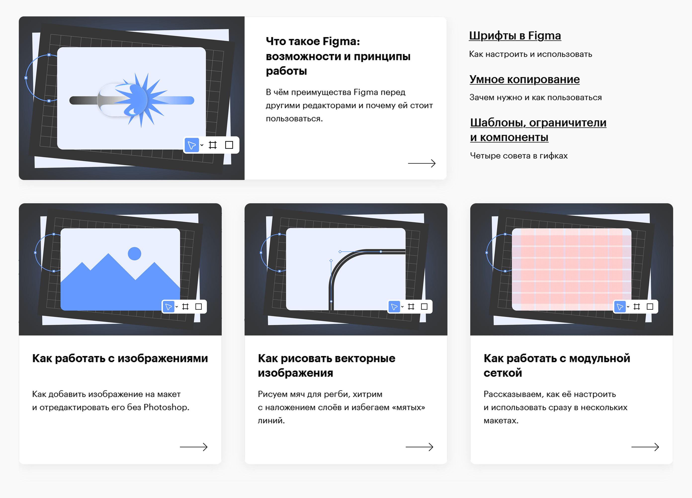
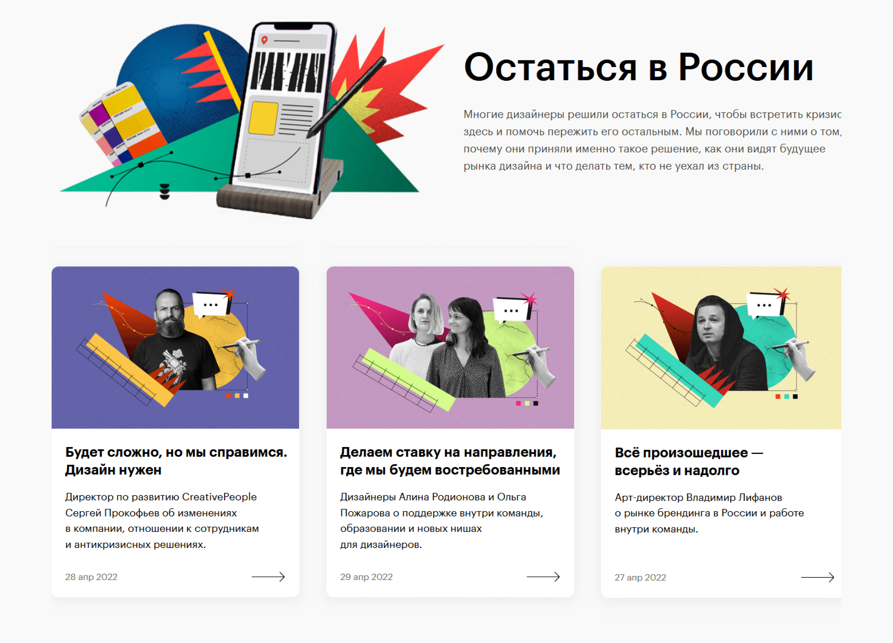
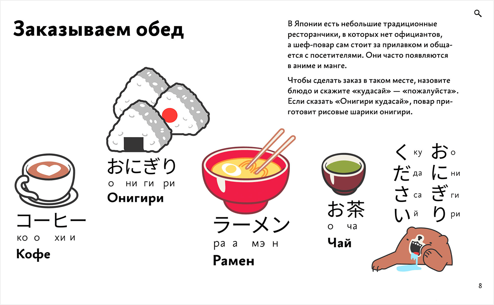
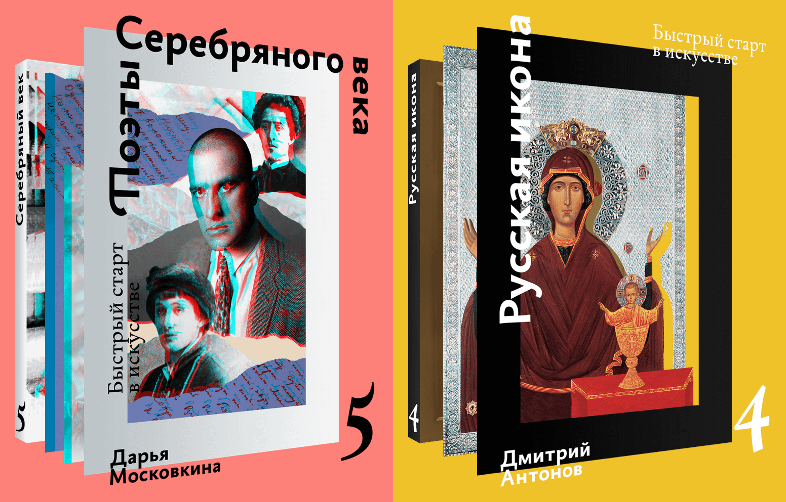

Журнал о дизайне и искусстве «поле»
Бывший Skillbox Media. Рассказываем об актуальном и современном дизайне, искусстве и культуре.
Отредактировал и выпустил 150 своих и примерно 600 авторских текстов: спецпроекты, кейсы, интервью, руководства.
Телеграм — ВК — Сайт (бывший)
Спецпроекты
Самоучитель по Figma. Сформировал стиль инструкций внутри издания, написал каждый текст, записывал видео, готовил короткие видео для соцсетей, поддерживал актуальность информации.
К нам в редакцию часто приходили благодарности об этом спецпроекте: от коллег со стороны, кураторов Skillbox, наших читателей.

Большой гид для самостоятельного изучения Figma«Режим самосохранения». Сборник коротких интервью о том, как дизайнеры и арт-директоры справлялись с кризисом февраля 2022 года.

Как февраль изменил дизайн в РоссииКейсы
Помогал студиям и агентствам рассказать о своих проектах в поле: проводил интервью, направлял повествование, выстраивал визуальную историю.
Maryco. Вместе с командой дизайнеров студии сделали много клёвых выпусков: о рабочих процессах, дизайнерских проектах, проектировании интерфейсов.
- Проект podonki works: плакаты как испытание и эксперимент.
- Коллаборации дизайнеров: лид‑дизайнер о том, как выстроить эффективные процессы в студии.
- Зачем дизайнеру рисовать шрифты: колумнисты maryco о том, как это помогает расти дизайнерам.
Flowwow. Помог ребятам рассказать про совместную работу дизайнеров и разработчиков и собрали кейс про адаптацию нового фирменного стиля под интерфейс мобильного приложения.
- Ребрендинг приложения Flowwow: как встраивать сложные графические решения в интерфейсы приложений.
- Дизайн vs фронтенд: секреты win‑win‑взаимодействия.
G8. Провели два созвона с командой Vosk, поговорили об оформлении G8 2023 года и будущем профессии.
- «Айдентика будущего»: студия VOSK о фирстиле G8 2023
NZHL. Душнейший, но очень интересный кейс обновления интерфейса новозеландского банка.
- Новый интерфейс на старых рельсах: редизайн личного кабинета банка из Новой Зеландии
Другие материалы
Кроме спецпроектов и кейсов сделал в поле много других статей: разборы, интервью, руководства, подборки, SEO.
- Одежда в играх. Рассказали на примерах кейсов, как создавали одежду в Mass Effect, Dishonored, Control.
- Паблик-арт. Большой обзор художественной сферы. Вместе с автором рассказали, к чему нужно быть готовым и как договориться с администрацией.
- Интервью с Юрием Гордоном. О типографике, задачах шрифта и «идеальном» решении шрифтовой задачи.
- Интервью с Владимиром Лифановым. О ценности фирстиля для клиента, ограничениях и отношении к работе.
Также следил за руководствами в издании: придумал правила оформления и редактуры, подгонял материалы под общий формат, и при необходимости следил за актуальностью текстов.
- Наброски. Подробный гайд, как начать рисовать людей. Объяснили основы и выстроили план для самостоятельного обучения.
- Препресс. Помог автору оформить все её знания о том, как правильно готовить макеты к печати.
- Лайтрум. Вместе с куратором Skillbox собрали серию подробных гайдов, как правильно красить фотки.
Бюро Горбунова
Дизайн-бюро, в котором проектируют продукты, выпускают книги и делают школу.
Здесь выпустил три книги, помогал выпускать видео-советы Артёма, собирал быстрые прототипы промостраниц.
Писал и редактировал: анонсы книг, рассылку о кофе, новости с запусками новых продуктов Бюро Горбунова, лекцию о фигме для подготовительных курсов Школ бюро.
Учебник «Японский язык без страха»
Верстал книгу и отлаживал промостраницу, выпускал анонсы и рассылки с рассказами о новых главах, редактировал черновик автора.
Специально для книги придумал и спроектировал формат достижений — читатели проходят тест внутри книги и в награду получают «медальку» с интересным фактом о Японии.

Промостраница учебника «Японский язык без страха»Брошюры «Русская икона» и «Поэты Серебряного века»
Входят в состав полки «Быстрый старт в искусстве». Верстал и редактировал брошюры, писал анонсы.

Промостраница полки «Быстрый старт в искусстве»Ютуб-канал Бюро Горбунова
С 2018 по 2021 год работал над ютуб-каналом бюро. Составлял задания для монтажёров, натаскивал стажёров, придумывал обложки. Также придумывал сценарии концовок и наводил юмор:
- концовка с Илоном Маском;
- концовка с примером согласования замечаний у А. Г.;
- Эм-эл-джи концовка с песней «Супергут»;
Иногда монтажил сам. Например:
Написал сценарий и сделал раскадровку к клипу «Пандемия»:
Журнал «Кто студент»
Полгода руководил студенческим журналом школ бюро.
Любимые выпуски: